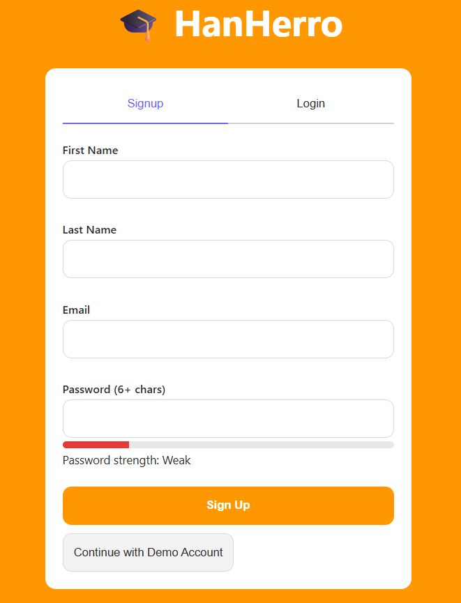
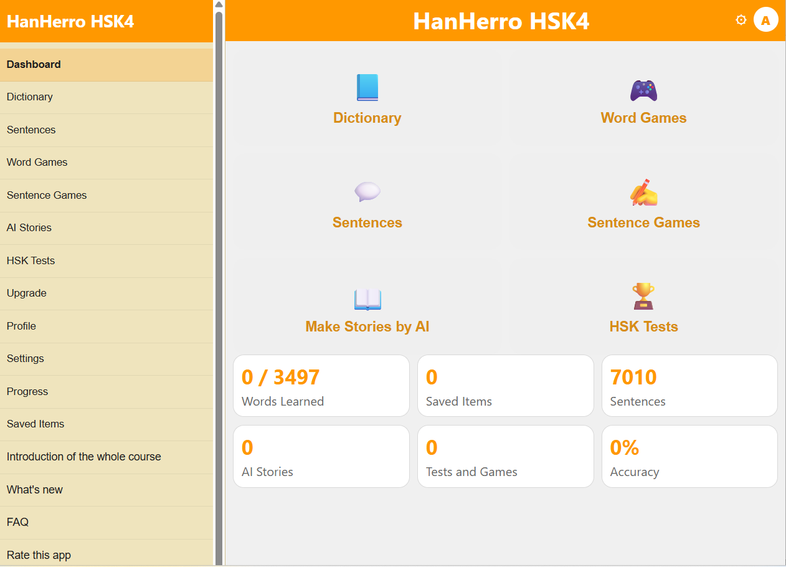
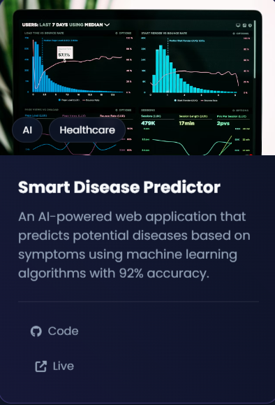
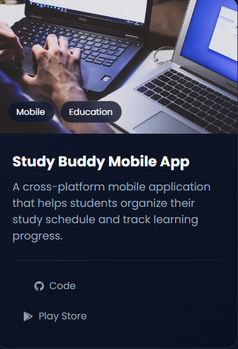

Researcher · Developer · Freelancer · HSK4 中文
I'm a passionate researcher and full-stack developer with a Bachelor's in Computer Science. My work spans AI, NLP, web development, and cross-cultural tech solutions. I'm fluent in English and Bangla, and conversational in Chinese (HSK4).
I believe in clean code, meaningful research, and building bridges between technology and people.
Published research in a peer-reviewed journal — contributions to computer science and AI.
Read PaperPresented at an international conference — exploring novel approaches in NLP and machine learning.
Read Paper
An interactive platform for learning Chinese with AI-powered feedback.
View on GitHub
AI-driven HSK exam preparation with personalized study plans.
View on GitHub
Machine learning model for early disease prediction and diagnosis.
View on GitHub
Collaborative study platform with real-time chat and resource sharing.
View on GitHubBuilding web applications, APIs, and automation tools for international clients.
Conducted research on natural language processing and machine learning models.
Developed full-stack features using React, Node.js, and MongoDB.
Contributed to multiple open-source projects focused on developer tools and libraries.
Django, Flask, FastAPI, scripting, data analysis
React, Node.js, TypeScript, Next.js, Express
MongoDB, PostgreSQL, MySQL, Redis
Docker, AWS, CI/CD, Linux, Nginx
TensorFlow, PyTorch, NLP, scikit-learn
English · Bangla · 中文 (HSK4)
Custom websites, SPAs, dashboards, and landing pages with modern tech stacks.
Chatbots, data pipelines, NLP tools, and intelligent automation solutions.
Clean, responsive, and accessible interfaces designed with user experience in mind.
Speaker at local meetups and university seminars on AI and web development.
Active contributor to open-source projects in the JavaScript and Python ecosystems.
Organizing Chinese-English language exchange programs for cross-cultural learning.
Participated in multiple hackathons, building innovative solutions under time pressure.
Recognized for outstanding research at an international CS conference.
Consistently ranked among top students during Bachelor's program.
Achieved Top Rated status on freelance platforms with 100% satisfaction.
From AlphaGo to AlphaFold — how DeepMind pioneered the AI revolution and solved a 50-year-old scientific problem.
Read MoreHave a project, research collaboration, or freelance opportunity? I'd love to hear from you.
Thank you for reaching out. I'll get back to you as soon as possible.